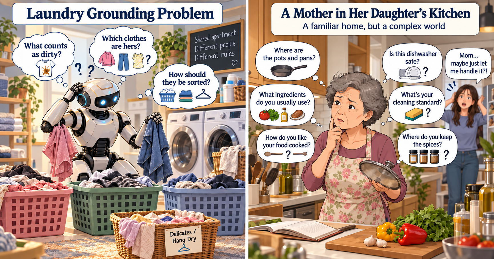
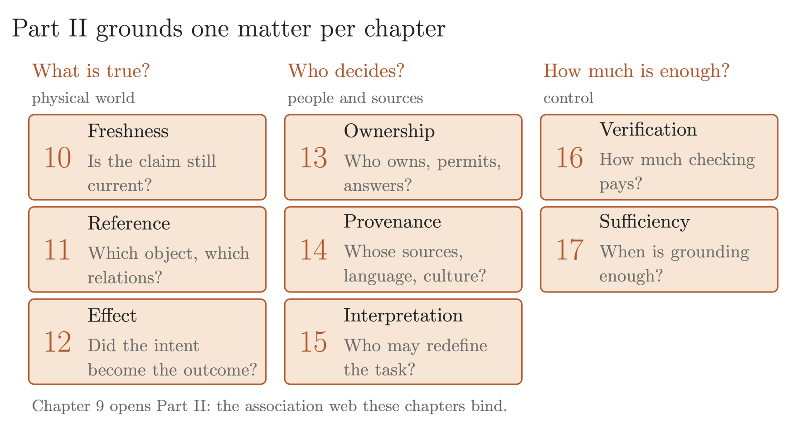

A mother visits her adult daughter and decides to help by cleaning the study. She gathers the scattered tax documents into a binder, puts the keys in a drawer, and throws a scrap of paper into the trash.
When the daughter returns, the room looks better. Her work does not. Invoices beside particular bank statements were the working layout of an ongoing tax-audit defense. The keys are no longer where she expects them. The discarded scrap held a password she needed to access her audit files.
She recognized and handled the objects competently. The object labels were right. The objective was wrong for the task.
Now replace the mother with a robot equipped with an impressive world model. It reconstructs the room, predicts object motion, and manipulates everything flawlessly. Better physical execution alone would not prevent the same mistakes.
A robot can learn how to change a room without establishing which changes it should make.
I call this boundary the Subjectivity Horizon: the point at which observable physical properties alone no longer settle what should be done for the people affected. Reality has not disappeared; physical description must be connected to purpose, evidence, and authority.
One Physical World, Different Purposes
Moving the documents changed their spatial relationships and disrupted information needed for the daughter’s work. The failure was not a loss of objective reality: it was treating object labels as a sufficient description of what mattered.
Subjectivity is not a synonym for error. “Leave my papers where they are until Friday” is a person-specific requirement, not a universal law. It can nevertheless be clear and legitimate. Ownership, current location, and the validity of an instruction, meanwhile, are not simply matters of opinion.
Objective evidence constrains belief. Human purposes help determine success. Authority determines what the agent may change. These dimensions interact, but none can substitute for the others.
An excellent cook can likewise enter her daughter’s kitchen without knowing where the spices are kept, which pan requires special care, or what “clean up” means there. General competence does not supply every household convention.

What the World-Model Boom Has Established
World model covers several approaches: scene generation, prediction in learned representations, and models supporting planning or robot-policy learning. These capabilities go beyond stationary-object recognition.
NVIDIA’s Cosmos 3 is presented as combining reasoning, world generation, and action generation, with simulation and robot-learning workflows. Meta’s V-JEPA 2, coauthored by Yann LeCun, reports motion understanding and an action-conditioned model used for robotic planning and pick-and-place tasks. World Labs’ Atlas, announced September 1, 2026, describes spatial reconstruction, space-time simulation, and robotics workflows.
On September 28, AMD announced an agreement to acquire World Labs, led by Fei-Fei Li, for approximately $8.2 billion. The proposed transaction was expected to close by year-end, subject to approvals and closing conditions.
These advances deserve recognition in their own right. Generating, editing, and exploring persistent 3D environments creates valuable possibilities for computer graphics, game development, and virtual production. A filmmaker can explore camera positions in a generated set; a designer can revise a virtual environment before committing to its construction. These are substantive creative capabilities, not merely attractive demonstrations.
Their value also extends to robotics. Synthetic environments can broaden training and testing conditions, while action-conditioned predictive models can help robots anticipate outcomes and plan movements. These contributions matter even without constituting embodied AGI.
But creating a useful simulated world is different from establishing what is true, current, and authorized in a particular real one. A generated kitchen can serve a film or a training exercise without establishing who currently uses a cup. A robot asked to retrieve that cup in an actual workplace may need precisely that information. Better scene generation and physical prediction supply important capabilities; grounded agency must connect those capabilities to current evidence, human purposes, permission, and verified outcomes.
“Wash My Daughter’s Dirty Clothes”
Consider a robot given that instruction in an apartment the daughter shares with two roommates. The baskets carry no names. Even with reliable navigation, garment recognition, and machine operation, the robot faces three unresolved parts of the task.
“My daughter’s” identifies a relationship, not a visual category. A shirt in her room could belong to a roommate. Location and appearance may be clues; they do not necessarily establish ownership or permission to wash it.
“Dirty” requires interpretation. A stained garment and a shirt set aside to wear again raise different questions. Clothes on a chair are not automatically awaiting washing; the relevant standard belongs to the task, not the robot’s default routine.
“Wash” is not an unrestricted procedure. Which care instructions apply? Should items be separated by fabric or color? Does the request include drying or ironing? Physical constraints, preferences, and authorized scope must all be respected.
More Videos of Other Homes Cannot Settle Every Fact About This One
Consider two visually identical studies. In one, the daughter has authorized disposal of the password note; in the other, she has instructed that it be preserved. Neither instruction is available in the robot’s observations or records.
A more accurate reconstruction of their shared appearance cannot reveal which instruction applies. Experience may suggest a likely answer, but that is not evidence of this person’s authorization.
When the available evidence fits two situations requiring different actions, a better model of that evidence does not supply the missing distinction.
A recording may contain the relevant instruction, and an interactive agent can consult records or ask. The point is narrower: additional pretraining is not a substitute for acquiring a necessary fact absent from the available evidence.
A World Model Is Not a Live Feed
“What is the traffic condition at the airport now?” requires more than road geometry or typical traffic patterns. The answer depends on which segment was recently observed, when, and what may have changed since. Prediction and current observation are different kinds of evidence.
The Cup I Used Five Minutes Ago
Consider a workplace where cups are shared. I ask a robot to “bring me my cup,” meaning the one I used five minutes ago. In that interval, it could have been washed, returned to the communal shelf, and picked up by another colleague. The cup remains the same physical object, but its location, cleanliness, and current user may have changed. Here, “my” refers to recent use, not permanent ownership.
Making an ordinary request depend on perfect, continuous tracking of every shared object is not a scalable default for an open workplace. That design requires observing each movement, wash, and handoff, then keeping their relationships current—even when events occur outside the robot’s view. Storing more video does not supply an event that was never observed.
The practical alternative is action-relevant freshness. Does the request require that exact cup? Is it still available, or now in someone else’s use? Would another clean shared cup satisfy the request? The robot should resolve the relevant uncertainty and confirm any substitution, rather than treat the last known location as a guarantee or reconstruct the history of the entire office.
The World Behind the Wall
Now ask the robot to investigate a water stain. Its source may be a pipe behind plaster, a drain above the ceiling, or another concealed connection. The visible surface does not necessarily identify the cause.
World Labs’ Atlas description distinguishes observed inputs from plausible completion: learned knowledge fills unseen regions, while additional views reduce what must be imagined. This can help construct a virtual environment, but it does not establish the concealed state of an actual building.
A plausible pipe behind a generated wall is not evidence that the pipe exists behind this wall.
A hypothesis can guide an inspection; it must not become the result of that inspection. The agent needs evidence that distinguishes competing explanations, potentially requiring measurements, records, or authorized access.
A large sofa may dominate the image while a small note or concealed defect determines the outcome. Visual prominence is not decision importance. The relevant level of detail depends on the task.
A Thousand Simulations Are Not a Thousand Inspections
Simulation can broaden training. In World Labs’ November 2025 Marble robotics case study, generated environments were integrated with simulation tools. The kitchen demonstration combined a static setting from Marble with separately supplied robot and object assets.
Varied pipe layouts could help an agent learn how to investigate leaks. But a thousand generated layouts are not a thousand inspections of this building. Training explores possibilities; deployment must establish which apply here.
Simulation also changes the cost of failure. In AlphaZero’s formal games, rules and outcome criteria are fixed, and self-play can be repeated. Failed trials consume computation, but the board can be reset. A simulator can restore a snapshot; a physical action may leave consequences that compensation cannot erase.
Methods such as cooperative inverse reinforcement learning already address initially unknown human objectives. The challenge here is operational: does the deployed system obtain and maintain the information its actual task requires?
Eight Grounding Questions: Volume III, Chapters 10–17
Part II of The Path to AGI, Volume III organizes these obligations. Chapter 9 introduces the association web; Chapters 10–17 address eight grounding questions under three headings: What is true? Who decides? How much is enough? Below, I apply the chapter map to the laundry task.

What is true? Physical world
10 Freshness
Is the claim still current?
Has the hamper changed since its last inspection? A previous inventory describes the past; the robot must establish whether it still applies to this load.
11 Reference
Which object, which relations?
Maintain the identities of the selected garments as they are unfolded, moved, and separated. Recognizing another blue shirt must not silently substitute it for the selected one.
12 Effect
Did the intent become the outcome?
Check that the intended items received the authorized treatment and excluded items remained untouched. A completed machine cycle does not establish a completed task.
Who decides? People and sources
13 Ownership
Who owns, permits, answers?
Establish who owns the items and who may authorize their treatment. A roommate’s suggestion does not automatically grant permission over another person’s belongings.
14 Provenance
Whose sources, language, culture?
Distinguish care-label instructions, the owner’s directions, and household conventions. Preserve their source and context, including what the wording means to the people using it.
15 Interpretation
Who may redefine the task?
Adding drying, ironing, or more garments changes the task. Establish who may approve that expansion rather than treating a helpful intention as authorization.
How much is enough? Control
16 Verification
How much checking pays?
Choose checks that resolve consequential uncertainty: a label reading, an inventory refresh, or clarification. Spend effort where it informs action, without treating required safety or permission checks as expendable.
17 Sufficiency
When is grounding enough?
Can authorized items be handled while uncertain ones remain untouched, or does a shared dependency prevent proceeding? Sufficiency concerns this action under stated conditions, not complete knowledge of the household.
Verification asks what to check next. Sufficiency asks what the resulting evidence justifies. Exhausting a checking budget does not turn an assumption into a fact.
The Grounded Assistant Asks a Better Question
Before changing the study, an assistant can resolve the uncertainty without reconstructing the daughter’s entire workflow or reading the password:
“Should I leave the documents, keys, and handwritten notes where they are? Which parts of the study would you like me to clean, and is anything explicitly marked for disposal?”
Once a bounded task is established, the agent should preserve its restrictions, notice changes that invalidate its assumptions, and verify the result. It should neither ask endlessly when reliable answers are available nor infer permission from silence when the ambiguity is consequential.
These functions can be implemented within a world-model-based system through observation, memory, interaction, and control. More capable models may help meet the obligations. They do not remove them.
A Test Beyond the Demonstration
I propose a paired-situation grounding test: hold the visible scene essentially fixed while changing ownership, permission, a handling exception, or the validity of a previous observation.
Make the missing information obtainable in some cases and unavailable in others. Measure appropriate action, task completion, unauthorized changes, and outcome verification, charging for time and checking effort. The workplace-cup case should also test whether the system refreshes the relevant state without requiring continuous tracking of every object.
Always refusing is not success; neither is confidently completing the wrong task. For hidden-state cases, require an informative observation rather than a plausible reconstruction presented as an inspection result.
Evaluate the complete agent, including its sensors, memory, tools, and interaction. Passing would be evidence of progress regardless of architectural vocabulary. This is a proposed evaluation, not a reported benchmark result.
From a Possible World to This World
The goal is neither a more convincing imaginary household nor an exhaustive record of every movement. It is enough reliable, current, and authorized context to carry out the particular task—and evidence that the intended result occurred.
A trustworthy agent must distinguish the world it has observed from the world it has inferred—and both from the world it has permission to change.
Selected Sources and Scope
The household, shared-workplace-cup, airport, and concealed-leak cases are illustrative thought experiments. The Subjectivity Horizon and paired-situation test are the author’s framing and proposal. The chapter labels and questions follow the author’s supplied Part II map; the household applications are not verbatim chapter summaries. Project descriptions below establish documented capabilities and claims, not certification of open-ended household autonomy. Web sources checked September 30, 2026.
Volume III and the chapter map. Edward Y. Chang (2026). Beyond Intelligence: From Operational AGI through Grounded Intelligence to Wisdom: The Path to Artificial General Intelligence, Volume III. Author’s archival edition, Zenodo, version 1, September 26. DOI: 10.5281/zenodo.22738473. Figure 2 reproduces the supplied chapter-map illustration.
NVIDIA. Cosmos: Physical AI with World Foundation Models. Current platform description of reasoning, generation, simulation, and robot-policy workflows.
Video prediction and planning. Mido Assran et al. (2025). V-JEPA 2: Self-Supervised Video Models Enable Understanding, Prediction and Planning. arXiv:2506.09985.
World Labs. Atlas: A World Model for Spatial Intelligence (September 1, 2026); Scaling Robotic Simulation with Marble (November 12, 2025). The former discusses reconstruction and plausible completion; the latter documents particular simulation workflows.
Creative workflows. World Labs. Welcome to Marble. Product documentation describes persistent 3D-world creation, editing, composition, cinematic camera recording, and exports for game engines and digital-content tools.
Acquisition announcement. AMD (September 28, 2026). AMD to Acquire World Labs to Advance the Future of AI Compute. An announced agreement, subject to closing conditions.
Learning and uncertain objectives. David Silver et al. (2017), Mastering Chess and Shogi by Self-Play with a General Reinforcement Learning Algorithm; Dylan Hadfield-Menell et al. (2016), Cooperative Inverse Reinforcement Learning.